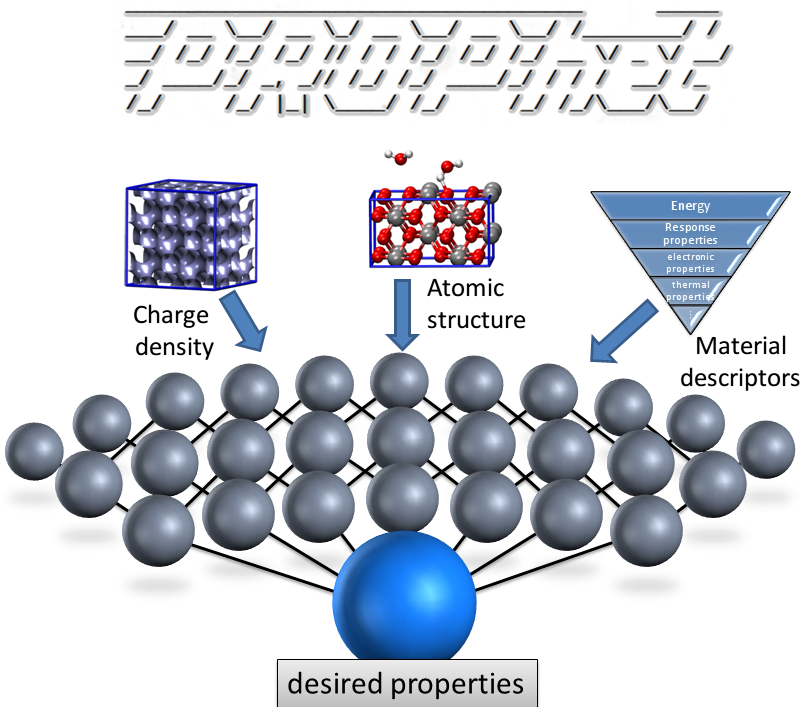
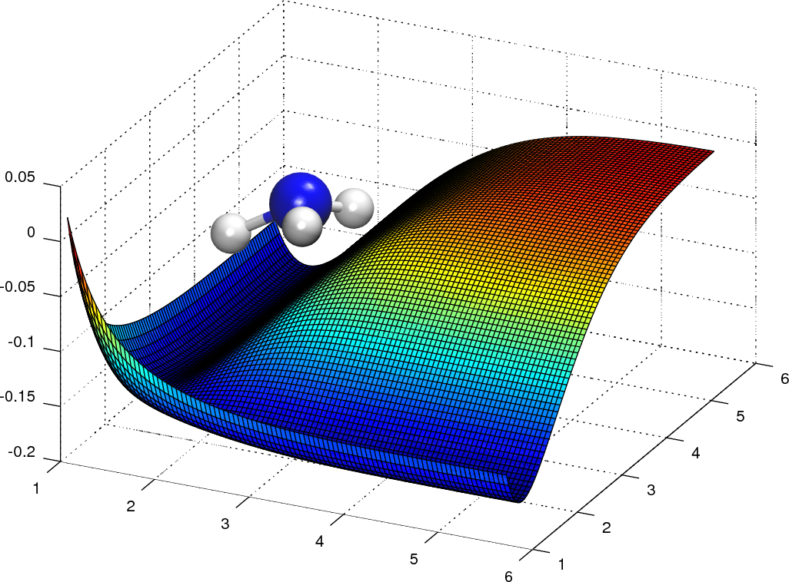
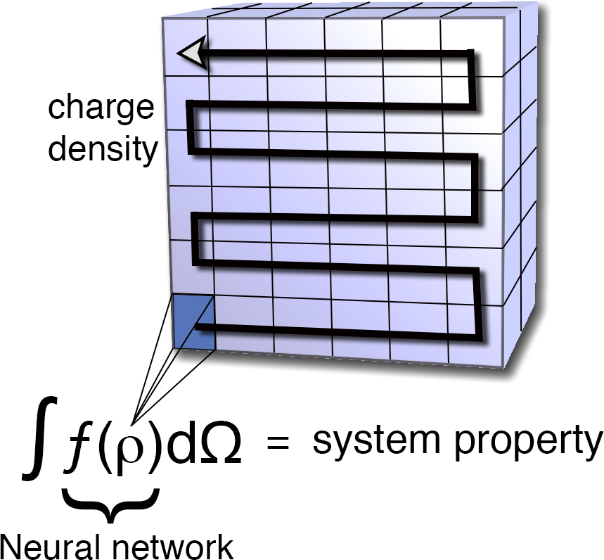
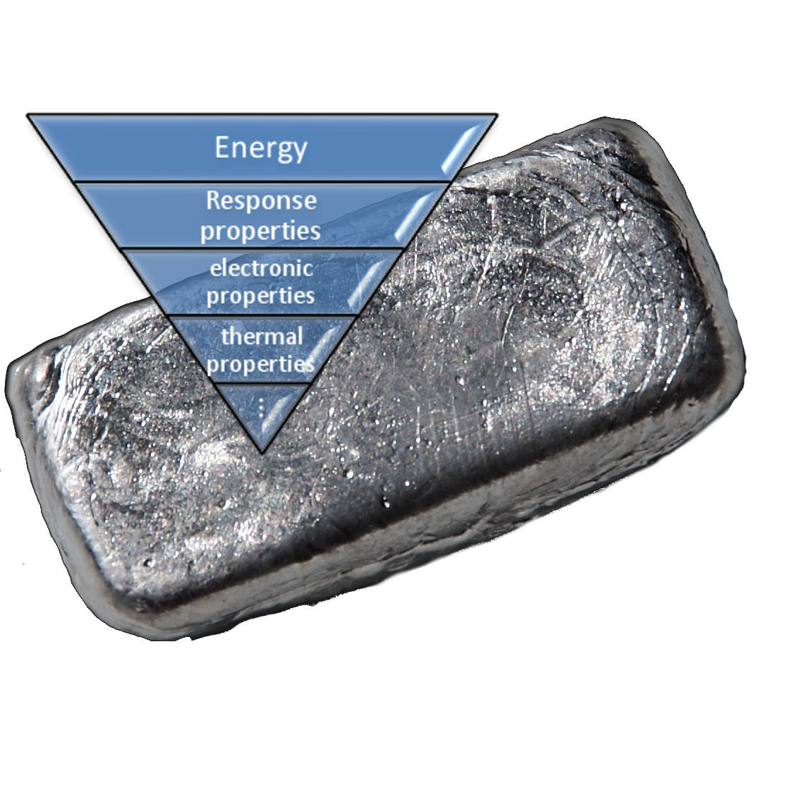

PROPhet (short for PROPerty Prophet) uses neural networks to find relationships between a specified set of material properties and other material properties. It can be used to predict expensive or difficult-to-compute properties from simpler properties. It can also be used to create density functionals for system properties or potential energy surfaces.
PROPhet works by taking a set of training data, generated in your favorite first-principles code, and finding a neural network mapping between the inputs and output. Provided the training data are sufficient, PROPhet can now predict this property for new cases you want to predict.
Some of PROPhet's features include:
- Many common properties can be automatically extracted from the output files of VASP, Quantum Espresso, and FHI-Aims; interfaces for additional codes can be easily added
- Arbitrary user-defined properties can be used, alone or in conjuction with standard properties
- Built-in interface for the popular molecular dynamics code LAMMPS allows potentials created with PROPhet to be used to compute sophisticated thermal and dynamical properties via MD
- Seamlessly handles structures with or without periodic boundary conditions in any combination
- MPI parallelized to run efficiently on thousands of cores
- Sensible defaults for almost everything mean you don't have to be an expert in neural networks to make effective use of PROPhet
Use PROPhet to:

Create analytical potentials
With PROPhet, you can generate an analytical potential using ab initio data (e.g. with density functional theory). PROPhet uses a method for training with system structure that (i) automatically includes any point/space group and permutation symmetry, (ii) does not require that structures seen in predictions have the same number of atoms as in training or that all training structures be the same size, and (iii) scales well with the number of degrees-of-freedom. These features combine to form a powerful approach that allows a potential to be trained on small systems that are affordable to first principles methods, but then used to predict large complex systems. Once trained, evaluating the network for new structures gives a prediction of the energy that would be obtained with a high-order quantum mechanical method, but at a computational cost close to that of a classical potential. Using PROPhet's built-in LAMMPS interface, you can use your PROPhet potential to run MD simulations on tens of thousands of atoms, extracting thermal and dynamical properties that are well beyond the capabilities of direct first-principles methods to compute.

Generate density functionals
PROPhet can take the electronic charge density as an input, allowing one to create machine-learned density functionals. This can be a "standard" density functional for the exchange-correlation energy, but PROPhet is not limited to this. In fact, PROPhet allows creation of density functionals for e.g. exchange-correlation energy, kinetic energy, band gap, response properties, or virtually any other system property one might wish to determine. The density and the property to be predicted do not need to come from the same calcultion or even the same method. For example, you can use DFT to get a ground state density and fit this to an accurate band gap computed via GW or TD-DFT. PROPhet is not even limited to local functionals, but can create non-local functionals of virtually arbitrary complexity.
This functionality is based on the Hohenberg-Kohn theorems, which state that the ground-state electronic charge density contains all the information needed to determine any system property, if one knows how to extract the information. For properties other than energy (and even for energy terms like the kinetic energy), we don't have the first clue what such a density functional would look like. Fortunately, with machine learning approaches, one does not need to know the functional form or almost anything else about the relationship being sought. In principle, if there is a relationship between the density and the value of the property provided, PROPhet can find it.

Map descriptors to system properties
Of course, PROPhet can be used in a more traditional manner, to fit a set of desired material descriptors to other properties of interest. This can be used to predict properties that are difficult to compute from a set of more accesible properties. For example, one might want to compute the band gap of a material as a function of a number of known material descriptors (dielectric constant, volume, etc). This approach can also be used to test hypotheses about which descriptors may be important in determining particular system properties. If reasonable fits cannot be obtained between sets of properties, that may indicate that there is not a strong predictive relationship between them.